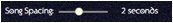
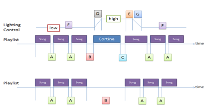

Whether you play a song as a Cortina or not, you can still mark them out using a slightly longer pause between the tandas as against the pause between songs of a tanda.
In the following labelled
diagram “A” is the spacing between songs of the tanda

“B” is the spacing before the Cortina. If no actual song is played this is just the extended pause. If using actual songs then you can define a pause after the Cortina before the next tanda starts.
A suggestion is to have the silence before a little longer than the normal pause and the silence after almost zero so that the tanda gets going straight away.
Note too that if you are using DMX lighting with the Tanda Player through the uDMX interface (a cable that plugs into the USB socket on either a slave device or the Tanda Player itself) then you can have the lights increase in brightness to help mark the Cortina and allow the cabaceo. Then when the tanda starts the lights slowly dim back down again to help create a private mood between the dancers.

“F” is the slowly changing background lighting controls through the setup page. “D”, “G” are the rate at which lights fade up and down. “E” is how long into the tanda before the lights should go down. All of these are controllable.